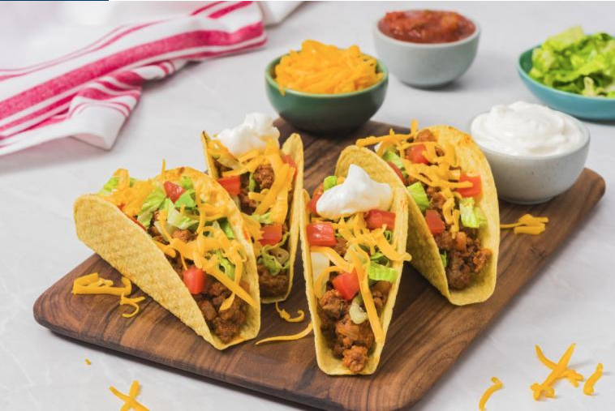

Homemade Tacos

Homemade Tacos: One of the easiest dishes we made while you girls were growing up!
When you were much younger
you hated my homemade tacos but as you got older you realized they weren't all bad.
These tacos are sure to make
your mouth water with a combination of your favorite taco seasoning and hamburger
meat served with some warmed
up flour tortillas and some hard taco shells!
This recipe serves 2-3, I generally mix 1lb of lean and 1lb of 85% hamburger meat and that serves 5-6.
- 1 lb of hamburger meat
- 2 tablespoons of taco seasoning per pound of meat
- 1 small pkg of tortillas
- 1 pkg of hard shell tacos of your choice
- 1 small/medium onion diced.
- Enough shredded lettuce, if you like it, put it in a bowl.
- 1 tomato diced and put in a small serving bowl.
- 16 oz Sour Cream leave it in the container like we always did.
- 16 oz pkg of colby jack or a mexican mix of shredded cheese, leave it in the package.
- 1 jar of your favorite hot sauce or salsa or both if you're having chips!
- 1 can of Rosarita's refried beans
- 1 bag of your favorite tortilla chips for pre-dinner snacks like the good ole days! (See, I told you, you're having chips!)
- Start by browning your meat over medium heat.
- While it is browning, season with a light coat of salt and pepper. You can add onion or onion powder for flavor
- After it is done browning, drain if there is excessive fat in the bottom.
- Return the meat to the pan and place back on the stove over medium heat and add taco seasoning and enough water to saturate all the meat and mix the taco seasoning in good.
- Keep an eye on the meat and stir occasionally to keep from sticking, once it starts to stick add a little more water and turn heat to low.
- Start the refried beans over medium heat and in a medium saucepan and add enough milk to make the beans look smooth like butter after stirring them! Speaking of butter, you can add a tablespoon or 4 for flavor!
- Put the hard taco shells in the oven on a baking sheet and set a timer so you don't forget them. Set timer for 5 minutes.
- Wet and wring out a kitchen towel and wrap the tortillas in it and place in microwave for 3 minutes on high.
- If the beans are warmed, and the meat has absorbed all the water, turn the stove off, turn the oven off, and serve that meal!
- You can make a queso if you're feeling ambitious, or you can buy some from a Mexican joint (If you do buy from there, they serve you with chips so you don't need to buy some at the store), or forego the cheese and just use salsa.
- Don't forget to bless the food!
- Enjoy!